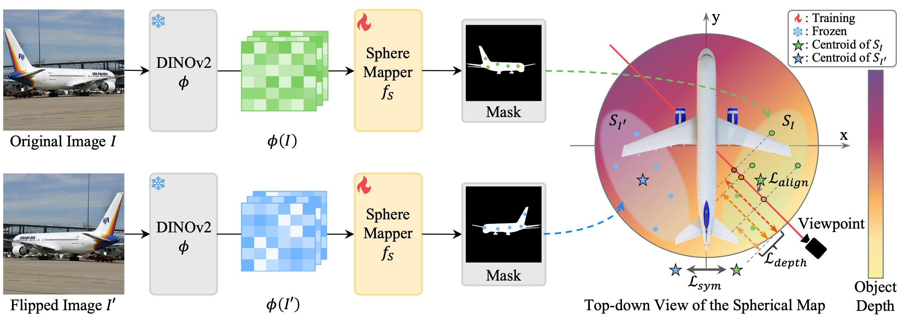
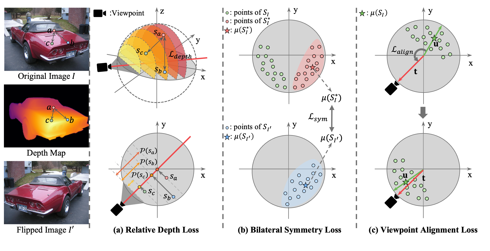

Method

Training Pipeline:
We train \( f_S \) using the original image \( I \) and its flipped image \( I' \). To focus on the object, we mask the images and the corresponding depth map, retaining only the object and its depth values, with the viewpoint provided by the dataset.
Green and blue dots represent points obtained by mapping the pixels of \( I \) and \( I' \) to spherical coordinates, while the green and blue stars indicate their centroids.
The top-down view of the spherical map visualizes depth, using lighter colors (yellow) for closer points and darker colors (purple) for farther ones.

Geometrical Losses:
The left images show the original image \( I \), the corresponding depth map, and the flipped image \( I' \).
(a) Relative Depth Loss: The depth in the spherical map is aligned with the direction parallel to the viewpoint. In the upper spherical map, semicircles of the same color represent equal depth planes.
The estimated depths of the triplet, \( \mathcal{P}(s_a), \mathcal{P}(s_b), \mathcal{P}(s_c) \), shown in the bottom, are defined as distances from the viewpoint.
(b) Bilateral Symmetry Loss: The green points represent \( S_I \), while the red points, \( S_I^* \), correspond to their mirrored counterparts across the \( y \text{-} z \) plane.
The blue points indicate \( S_{I'} \), and star markers denote the mean coordinates of each point set.
(c) Viewpoint Alignment Loss: The green arrows represent the unit directional vector \( \mathbf{u} \) of the mean coordinates, and the red arrows denote the viewpoint vector \( \mathbf{t} \). After training, \( \mathbf{u} \) becomes aligned with \( \mathbf{t} \).